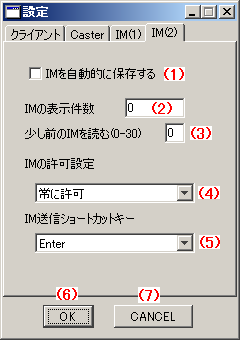

東方萃夢想 Alt Lobby System 東方萃夢想ロビーシステム(RC4) 操作説明 設定ウィンドウ IM(2)設定
はじめに
このドキュメントは、東方萃夢想 Alt Lobby Systemのテスト版の操作説明を簡略にまとめたものです。
アプリケーションと同様に本ドキュメントもテスト版であり、機能の説明やスクリーンショットなどは予告なく変更されることがあります。
設定ウィンドウ IM(2)設定

操作説明
- (1)IMを自動的に保存する
- チェックを入れると、届いたIMを自動的にyyyy-mm-dd.txtの形式で保存します。
- 日付変更時に自動的にlotateされます。
- 出力を開きっぱなしのまま、バッファリングしつつ書き込むので、異常終了時には一部のデータが失われることがあります。
- (2)IMの表示件数
- 右上のIM表示部に表示されるIMの最大件数を指定します。
- この数値を超える場合、古いメッセージから削除されていきます。
- 0を指定すると、無制限となり、メモリが許す限り保持します。
- (3)少し前のIMを読む
- 右の入力エリアに入れた数値の件数だけ前のIMをサーバーにリクエストします。
- これにより、接続時にそれまでの流れを知ることができます。
- 入力できる値は0～30で、30より大きな値や0より小さい値は制限されます。
- 0を指定した場合、読み込みは行われません。
- (4)IMの許可設定
- 常に許可：いつでもIMを受信できます
- 対戦中のみ拒否：対戦中にIMを送れないようにします。
- 常に拒否：ユーザー指定IMを受信できないようにします。
- (5)IM送信ショートカットキー
- IMエリアにて、ここで設定したキーを押したときにIMが送信されるようになります。
- EnterかShift+Enterのいずれかを選択できます。
- (6)OK
- 設定を保存して、設定ウィンドウを閉じます。
- (7)CANCEL
- 設定を保存せず、設定ウィンドウを閉じます。
リンク
- 接続ウィンドウ
- http://th075altlobby.dip.jp/usage/connect_win.html
- メインウィンドウ
- http://th075altlobby.dip.jp/usage/main_win.html
- 設定ウィンドウ クライアント設定
- http://th075altlobby.dip.jp/usage/setting_win_client.html
- 設定ウィンドウ Caster設定
- http://th075altlobby.dip.jp/usage/setting_win_caster.html
- 設定ウィンドウ IM(1)設定
- http://th075altlobby.dip.jp/usage/setting_win_im1.html
- 設定ウィンドウ IM(2)設定
- http://th075altlobby.dip.jp/usage/setting_win_im2.html
- 東方萃夢想 Alt Lobby System (仮) 東方萃夢想ロビーシステム(b10) 操作説明
- http://th075altlobby.dip.jp/usage/
最終更新 : 2010-02-19 1:00
作成日時 : 2010-02-19 1:00
サイトトップ : http://th075altlobby.dip.jp/